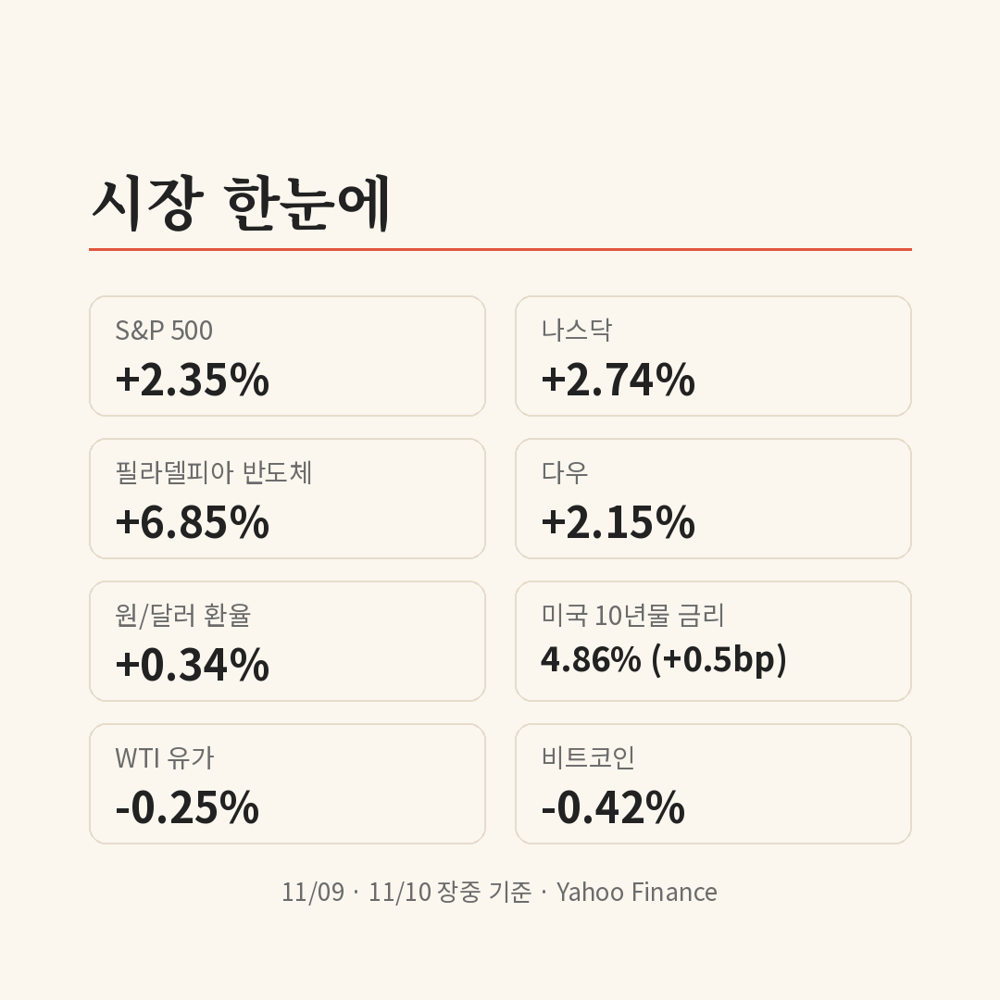
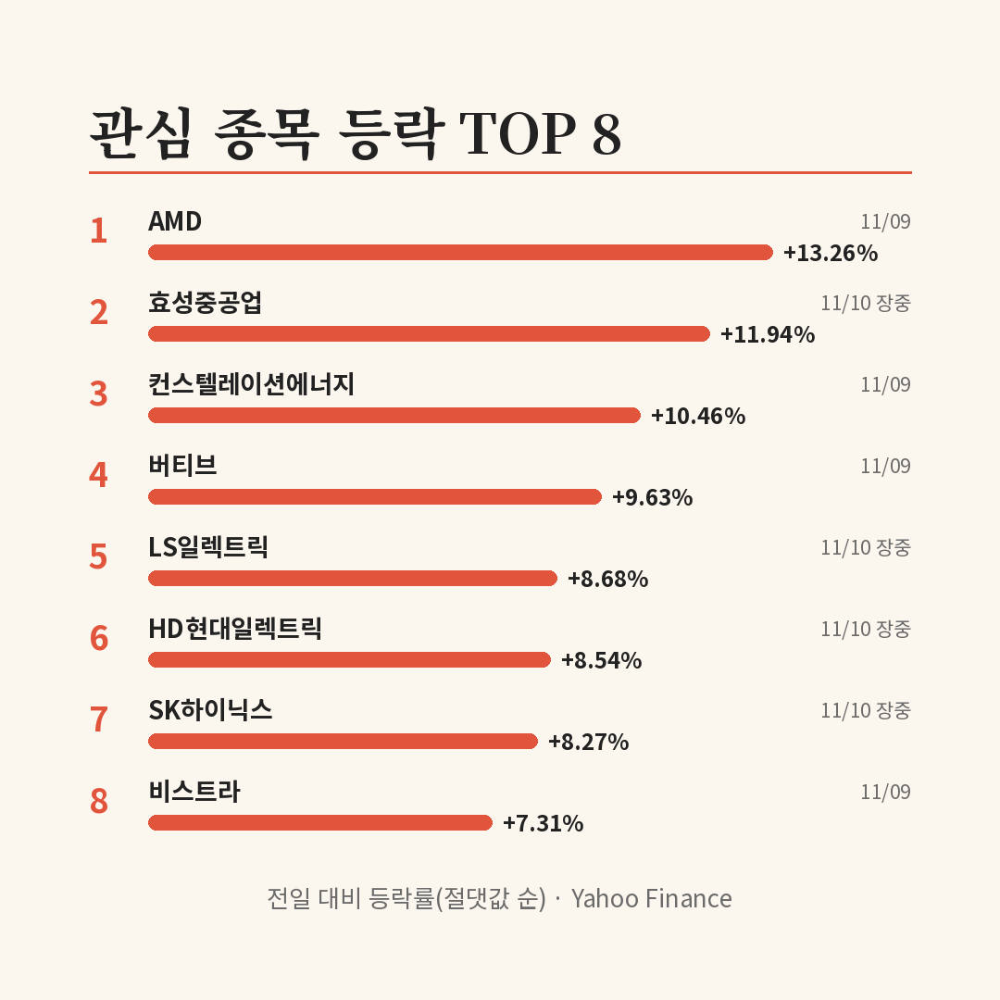

선거 일주일, 무엇이 있었나
| 날짜 | 내용 |
|---|---|
| 11월 3일(현지) | 미국 중간선거. 민주당이 상·하원 모두 과반 확보[1][2] |
| 이후 | 'AI 규제 법안이 쏟아질 것'이라는 우려가 커짐[3] |
| 11월 9일(현지) | 트럼프 대통령이 선거 결과에 의문 제기[4]. 같은 날 미국 증시는 큰 폭 반등[5] |
| 11월 10일 | 코스피·코스닥 동시 매수 사이드카 발동[6][7] |
선거 직후 시장이 걱정한 건 민주당이 다수가 된 의회가 데이터센터 건설에 제동을 걸 수 있다는 점이었어요. 전기요금과 지역 주민 부담을 이유로 데이터센터에 반대하는 목소리가 선거를 거치며 커졌다는 분석이 나왔어요[3].
어디까지가 사실이고 어디부터 전망일까
| 구분 | 내용 |
|---|---|
| ✅ 사실 | 민주당이 상·하원 모두 과반 |
| ✅ 사실 | 9일 미국 전력·데이터센터 관련주 일제히 상승 마감 |
| ✅ 사실 | 10일 국내 증시 장 초반 매수 사이드카, 전력기기주 강세 |
| 🗣️ 전망 | AI 규제 법안이 늘어날 것이라는 우려[3] |
| 🗣️ 전망 | 데이터센터 건설 자체는 계속되고 꺾인 건 투자 심리뿐이라는 시각 (인베스트조선) |
| 🗣️ 전망 | 국내에서는 데이터센터·통신망 투자 재개 기대에 광통신주와 NHN이 강세[8][9] |
아직 새 법안이 통과된 건 없어요. 새 의회는 2027년 1월에 열리고, 법안이 통과돼도 대통령이 거부권을 쓰면 상·하원 각각 3분의 2 찬성이 있어야 뒤집을 수 있어요.
하루에 10% 올라도 일주일 성적은 마이너스
9일 미국 증시는 S&P 500이 2.35%, 나스닥이 2.74% 오르며 넓게 반등했어요. 테마 관련주는 지수보다 훨씬 크게 움직였어요.
📷 사진 1 자리
| 종목(9일 종가) | 하는 일 | 전일 대비 | 1주 | 1달 |
|---|---|---|---|---|
| 컨스텔레이션에너지 | 원전·발전 | +10.46% | +7.32% | -6.06% |
| 버티브 | 데이터센터 전력·냉각 장비 | +9.63% | -10.60% | -16.25% |
| 비스트라 | 발전 | +7.31% | -0.51% | -15.31% |
| 이튼 | 전력기기 | +5.14% | -1.85% | -15.79% |
| 엔비디아 | AI 반도체 | -4.27% | -11.58% | -21.05% |
같은 반등이어도 회복 정도가 갈렸어요. 1주 수익률이 플러스로 돌아선 건 컨스텔레이션에너지 하나뿐이에요. 데이터센터 안에 들어가는 장비를 만드는 버티브는 하루 9.63% 올랐는데도 일주일 전보다 10.60% 낮아요.
시장이 발전 회사와 데이터센터 장비 회사를 다르게 본 셈이에요. 데이터센터 건설이 늦어지면 장비 주문은 바로 줄지만, 전기는 데이터센터가 아니어도 수요가 있어요. 엔비디아는 이날 CEO 문제로 따로 빠져서 이 비교에서는 예외로 봐야 해요.
국내 전력기기주, 반등 폭보다 큰 구멍
10일 국내에서도 전력기기주가 강하게 출발했어요(오전 9시 49분 무렵 장중 기준, 종가 아님).
| 종목(10일 장중) | 전일 대비 | 1주 | 1달 |
|---|---|---|---|
| 효성중공업 | +11.94% | -12.02% | -22.66% |
| LS일렉트릭 | +8.68% | -19.87% | -33.88% |
| HD현대일렉트릭 | +8.54% | -12.30% | -33.85% |
| 코스피 | +5.16% | -9.92% | -17.33% |
하루 반등 폭은 미국 관련주와 비슷하지만 빠진 폭이 훨씬 커요. HD현대일렉트릭과 LS일렉트릭은 1달 기준 34% 가까이 내려가 있어 코스피 하락분의 두 배 수준이에요. 시장 전체가 빠진 걸 감안해도 '미국 데이터센터 투자 둔화'라는 걱정이 국내 전력기기주에 더 크게 반영돼 있다는 뜻으로 읽혀요.
📷 사진 2 자리
HD현대일렉트릭 주가는 미국 전력망·데이터센터 투자와 묶여 거론돼 온 만큼, 미국 정치 뉴스에 민감하게 움직여요. 이번 반등이 버티브 같은 미국 장비주와 같은 날 나왔다는 점도 그 연결을 보여 줘요.
규제 공포가 갈 수 있는 세 갈래
| 시나리오 | 무엇을 보면 되나 | 예상되는 영향 |
|---|---|---|
| 우려가 말에 그침 | 새 의회 개원(2027년 1월) 전까지 구체적 법안이 없음 | 발전주에 이어 장비주도 1주·1달 손실을 줄여 갈 수 있음 |
| 주·지역 단위 제동 | 주 정부 인허가 지연, 지역 주민투표 결과 | 연방 법보다 느리지만 실제 착공 일정에 영향. 장비주 변동성 지속 |
| 연방 규제 법안 추진 | 민주당 지도부의 법안 발의, 대통령 거부권 언급 | 장비·전력기기주 재하락 가능. 다만 거부권 벽이 있어 법 통과까지는 시간이 걸림 |
연방 법보다 주·지역 인허가가 더 현실적인 변수라고 봐요. 대통령 거부권이 있는 한 전국 단위 규제는 쉽지 않지만, 지역에서 착공이 몇 달씩 밀리면 장비 주문도 그만큼 밀리거든요. 이번 반등에서 발전주만 1주 수익률을 회복하고 장비주는 못 한 것도 같은 걱정이 남아 있다는 신호로 보여요.
✍️ 직접 보거나 들은 경험이 있으면 위 문단에 한두 줄 덧붙이세요 (이 안내 줄은 지우기)
반대로 볼 근거도 있어요. 미국 규제가 데이터센터를 없애는 게 아니라 규제가 약한 지역이나 해외로 옮길 뿐이라는 시각이에요. 실제로 미국 불확실성을 피해 빅테크가 한국 데이터센터에 큰돈을 걸고 있다는 분석도 나왔어요(Investing.com 한국어). 이렇게 되면 국내 전력기기 회사에는 오히려 수요처가 넓어지는 셈이에요.
이번 주에 볼 것
참고한 기사
이 글은 정보 제공 목적이며 투자 권유가 아닙니다. 투자 판단과 책임은 본인에게 있습니다.
시장 수치: Yahoo Finance 기준(미국은 11월 9일 종가, 국내는 11월 10일 오전 장중). 1주·1달 등락은 거래일 기준 대략값

